复杂的食物
葡萄汁好喝，所以葡萄酒也好喝。
葡萄汁是一种简单的饮料。你知道它的味道。在任何时候，你喝的每一口味道都是一样的。你只会在口渴、需要能量或者只有5分钟休息时间的时候需要它。
相反，葡萄酒有很多种味道。即使在同一个瓶中，它也会在你饮用的过程中因为酒变温，因为酒液暴露在空气中产生化学反应而使味道产生变化。对有经验的品酒者来说，每一次啜饮都会感觉到连续的变化。
当然，只有复杂性还不够。一道菜的各种味道应该相辅相成。法国名菜红酒烩鸡中，鸡肉的味道既入味（褐色高汤）又新鲜，结合勃艮第红酒、番茄、大蒜，加上黄油煮过的培根、甜洋葱和蘑菇，以及火焰法国白兰地。
红酒烩鸡并不是一道简单的菜肴，但是要知道简单和复杂并不矛盾这一点很重要。一道名菜可以将二者兼顾。我们以水果为例，想一想，一个苹果只能被视为一道简单的餐食。但是任何经历过从树上摘下苹果的人都知道，苹果可以为我们提供层次丰富、复杂的味觉感受[11]。
水果是一个很好的简单/复杂的例子。工厂化种植的草莓不具备复杂性，它们是为了保质期和一致性而生长、繁殖的，味道稳定不变，没有层次。另一方面，新鲜的地产草莓则有多种味道，甜和酸都有不同的层次。
但是，大批量生产的草莓通过技术手段也可以实现复杂性。马赛拉·哈赞[12]就是简单性的信徒。但是简单与复杂可以齐头并进。她曾建议把浆果和香醋、糖组合在一起[13]，那样的味道非常美妙。
有一年3月我曾在一次晚宴上给我的客人们送上了一种表面上看起来平淡无奇的草莓。他们很喜欢它的味道，并且问我如何在3月找到如此新鲜的草莓。其实我所做的只是给这些草莓撒上一些柑曼怡香橙甜酒。由于某种原因，后加入的利口酒的橙子味道足够丰富、复杂，糊弄住了我的这些客人，使他们以为自己吃的东西非常特别。我本无意欺骗，我只是想让这些浆果口感更好。
我在一个覆盆子自摘农场得到过一个馅饼制作方法，通过这个方法，覆盆子味道的复杂性被淋漓尽致地发挥出来。秘密就是将烹饪过的覆盆子和新鲜的覆盆子相结合。我只是对这个食谱进行了微改。
坤坤特覆盆子果馅饼（6～8人份）
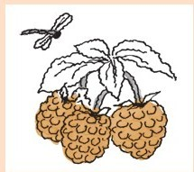
果馅饼的饼体需要：
1杯面粉
2½汤匙糖
¼茶匙盐
份无盐黄油棒
将面粉、盐和2½汤匙的糖一起过筛（或者用搅打器将它们混合）。用面团分切机将黄油切成非常小的颗粒。生面团会变干、易碎，将它们分别装入独立的果馅饼烤盘中，均匀地向下压，然后以180摄氏度的温度进行烘焙，直到散发出香味，面团变成金色。在冷却过程中，将饼壳从烤盘中移出，并摆放在甜品盘中。
馅料需要：
1夸脱（1夸脱=0.946升）覆盆子
¾杯水
杯糖
3汤匙玉米淀粉
炖锅加水，倒入一杯覆盆子。煮沸后转小火炖。用搅打器将覆盆子捣碎，加入糖和玉米淀粉彻底搅拌，然后一边用搅打器猛力搅拌（你需要做的是防止玉米淀粉凝结成块），一边与炖煮的覆盆子混合，继续加热直至它从汤水与白玉米淀粉的混合物转变成浓稠、清透（但是颜色较暗）的馅料。停止加热，降温至不烫手。
当混合物已经降温但还未彻底凝结时，加入未经烹煮的覆盆子，混合。将混合物堆在饼壳的圆槽中。
果馅饼最上层：
1杯用于打发的奶油
1汤匙糖
¼茶匙香草
打发奶油，加入糖和香草，再略搅打。在果馅饼上放上奶油就可以上桌了。
说明：
·理论上讲，这份甜品正式上桌前一共需要的时间不超过一小时。
·如果你没有单个独立的小馅饼烤盘，可以用一个大的馅饼烤盘或者烙馅饼的平锅做饼壳。将做好的饼壳分成小块（不必规则），摆放在甜品盘中。
·原来的坤坤特农场的方法是用来做覆盆子派的，这样混搭做出的馅饼好吃得让人想哭，但是你只能在要正式上桌前才把馅料和饼壳搭配在一起，否则馅料会把饼壳浸湿变软。这里介绍的方法可以防止饼壳被浸湿变软，但只是一时，并不长久。
·想要增加复杂的口味，你可以在煮覆盆子的时候加入一茶匙黑醋栗酒。
复杂的数学
我会在这一部分说说几个游戏。游戏是公认的数学领域，但是又不仅仅是数学。游戏是数学的完美缩影。它们可以是理论、推理，也可以是实用工具。它们是被分析的对象，也可以为我们提供游戏，体验快乐。它们是简单的，也是复杂的。
有一个特别简单的游戏，我叫它“1-2-3拿走”。你可以用一堆木棍开始这个游戏。
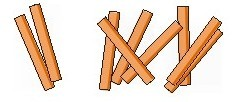
两个参与游戏的人依次轮流拿走木棍。一次可以拿走1根、2根或者3根木棍。最后拿走木棍的人赢。
显然，如果这一堆里只有1根、2根或者3根木棍：
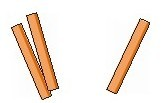
第一个游戏者（我们称她为一号玩家）就有一个制胜方法，那就是一次性拿走所有的木棍。
如果这一堆里正好有4根木棍：
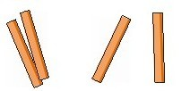
第二个游戏者（我们称他为二号玩家）也有一个制胜方法——因为无论一号玩家拿走几根木棍，二号玩家都可以拿走剩下的所有木棍，赢得胜利。
这是个简单的游戏，因为无论这堆木棍的规模大小，分析起来都很容易。例如，假设有23根木棍。
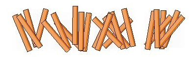
将它们排列成4根一束，会剩下3根——
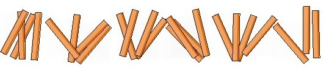
接下来，一号玩家会拿走多出的3根，这样会剩下5束木棍，每束4根。从现在开始，一号玩家会——
·拿走1根木棍，如果二号玩家拿走3根木棍，
·拿走2根木棍，如果二号玩家拿走2根木棍，
·拿走3根木棍，如果二号玩家拿走1根木棍。
这样每一轮都会拿光一束共4根木棍。一号玩家会获胜。
上述分析表明，如果，也只有如果木棍的数量能被4整除，二号玩家才会获胜。
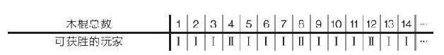
如果我们将一号玩家获胜用彩色方块表示，二号玩家获胜用白色方块表示，那么这个图就更容易让我们看清楚、弄明白。
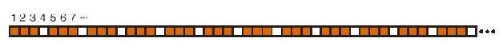
现在我们改变游戏规则，允许玩家拿走1根、2根、3根或者4根木棍，同样，最后一个拿走木棍的人获胜。
这个游戏同样容易分析。如果一堆木棍的数量是1、2、3或者4，则一号玩家会获胜。如果一共有5根木棍，则二号玩家会获胜。正如前文中的周期性图形，这一次会变成：
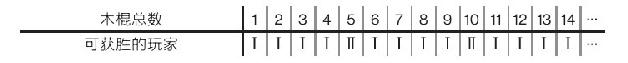
或者
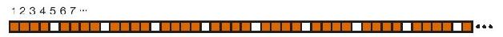
如果我们限制玩家每次只能拿走1根、3根或者4根木棍，那游戏就变得更有趣了。与以往一样，最后拿走木棍的玩家获胜。
一号玩家会在1根木棍的游戏中获胜，二号玩家在2根木棍的游戏中获胜。一号玩家会在3根或4根木棍的游戏中获胜，那么一共有5根木棍的游戏呢？
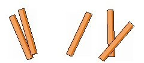
一号玩家通过拿走3根木棍获胜（留下2根，这对二号玩家不利），也可以通过拿走4根木棍获得6根木棍游戏的胜利。但是在7根木棍的游戏中获胜的是二号玩家。我们再用图形表示，这一次的更有趣，每7个方格会出现一次重复。
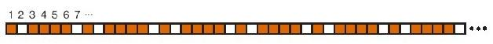
这些游戏被称为“取物游戏”。单独来看它们都不复杂。无论游戏允许拿走什么，你总会得出一个像前文那样的有周期性的图形。但是，令人惊奇的是，除了辛苦地逐一检验有几堆、木棍数和拿走的方法外，还没有人找出发现重复周期的方法。这就是取物游戏的神秘之处。
现在你们看到的是我的一个特别复杂的游戏，我称它为“好猎手”[14]。
和之前一样，我们从一堆木棍开始游戏。一号玩家可以拿走1根或2根木棍，这样的话，玩家（通常）会有三种选择：
·她可以和她的对手拿走一样多的木棍
·她可以拿走比自己对手多的木棍
·她可以拿走比自己对手少的木棍。
我之所以说“通常”是因为你总是必须拿走至少一根木棍。正如其他那些取物游戏一样，获胜的玩家是最后拿走木棍的那个。
任何有限之物都有一个定理，两个玩家的游戏中，其中一个玩家会获胜。[15]这就意味着我们可以为这个游戏制作一个方格序列。开始时是这样的：
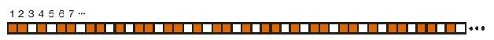
这个游戏非常复杂，我会用更详细的图片说服你。游戏中任何一点都有两个重要的数字：木棍的总数以及木棍被拿走的比率。下面这张图显示的是在木棍总数和拿走木棍比率不同的情况下，谁会获胜。与之前的图片一样，红色方格代表一号玩家获胜，白色方格代表二号玩家获胜。
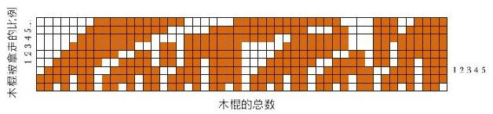
举例来说，假设木棍总数5，拿走比率为2的方格是白色的，这就意味着二号玩家在这种游戏形势下握有制胜之道。这一点不难看出。如果一号玩家拿走2根木棍，二号玩家会拿走3根木棍并且获胜。如果一号玩家拿走的是3根木棍，则二号玩家可以拿走2根木棍并且获胜。如果一号玩家拿走1根木棍，二号玩家可以拿走1根木棍，留给一号玩家的又是一个白色的方格。
上面这张图片显得杂乱无章。如果我们多看一些数据就会看到有些图形出现了。
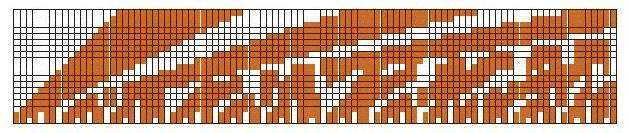
这张图就是由大量数据组成的。
真是复杂！
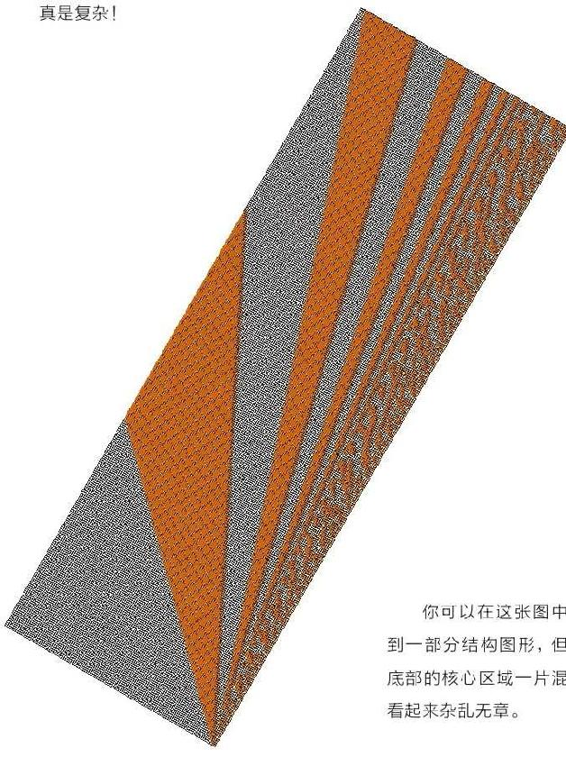
你可以在这张图中看到一部分结构图形，但是底部的核心区域一片混乱，看起来杂乱无章。
我不得不承认我没有弄懂好猎手游戏！并且据我所知，没有人懂。
在我结束这一章之前，我想告诉你三种非常有趣的变化。第一个可以称为“胆小鬼”。将那堆木棍想象成两辆在街道两头对峙的改装高速汽车。
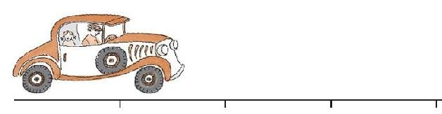
这条街道是按照汽车的长度测量的，在胆小鬼游戏里，驾驶员（游戏玩家）依次轮流向前开车。玩家中的任何一方第一次前移的长度必须是一辆或者两辆汽车的长度，此后，每个驾驶员都有三种选择：
·保持速度（驾驶到他/她能到的最远之处）
·增速，增加一辆车的长度
·减速，减少一辆车的长度
——除非像好猎手游戏中那样，驾驶员必须前移至少一辆车的距离。不允许猛撞，获胜者是那个最后合法前移的驾驶员。
你可以看出这个游戏和好猎手的关系（你也能明白为什么弗莱德给它起了这个名字）。车之间的距离就像一堆木棍的总数，但这个游戏的不同之处在于取代木棍移走的单一比率，每个玩家可以有自己的速度。
第二个变化我称之为“马上长矛比武”。两名骑着战马的骑手面对面准备。
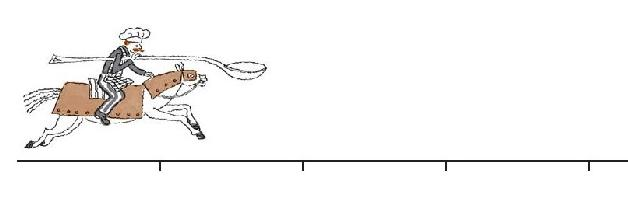
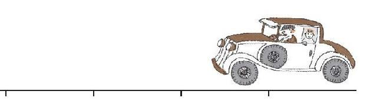
除了游戏的目标是让你的骑手落到对手骑手的上方，这个游戏就像胆小鬼游戏一样。在游戏的过程中你可能会与对手擦肩而过（这个游戏是在一个无限大的场地上玩的）。既然这样，两名骑手会减速、停止、反转方向，再次向前冲。在马上长矛比武中，允许你在一次移动中静止不动，实际上，如果你不那么做就不能反转方向。决定逃跑的骑手会输掉比赛。
最后，还有一种游戏变化。这个是“德贝冲撞赛车”，一种二维游戏，在网站上有详细的说明。可以有两名或者更多名玩家参与这个游戏，每人驾驶一辆汽车。尽管驾驶的是汽车，但它确实是马上长矛比武游戏的二维版，也就是说，玩家的目标是让自己的汽车着陆在另一辆汽车上。如果你这么做就会让这车报废，它也就退出了游戏。最后留下的车要还能移动，这是游戏的目的。
我向你展示了一个简单的和一个复杂的游戏。可能你会偏爱那个简单的游戏以及其他取物游戏。也许你更喜欢那个复杂的游戏以及马上长矛比武，但可能你哪一个都不喜欢。
无论你的偏好是什么，你都会有自己的品味。这也正是下一章的主题。
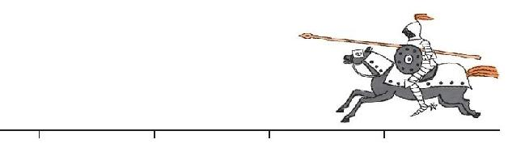